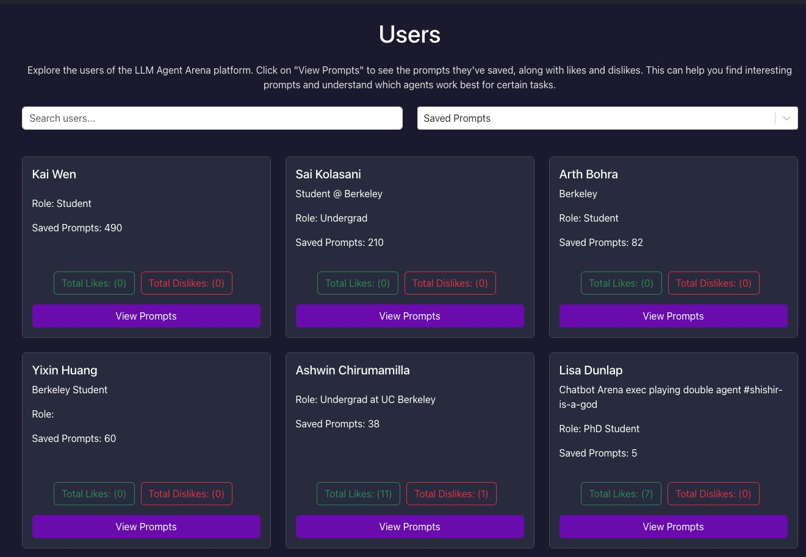
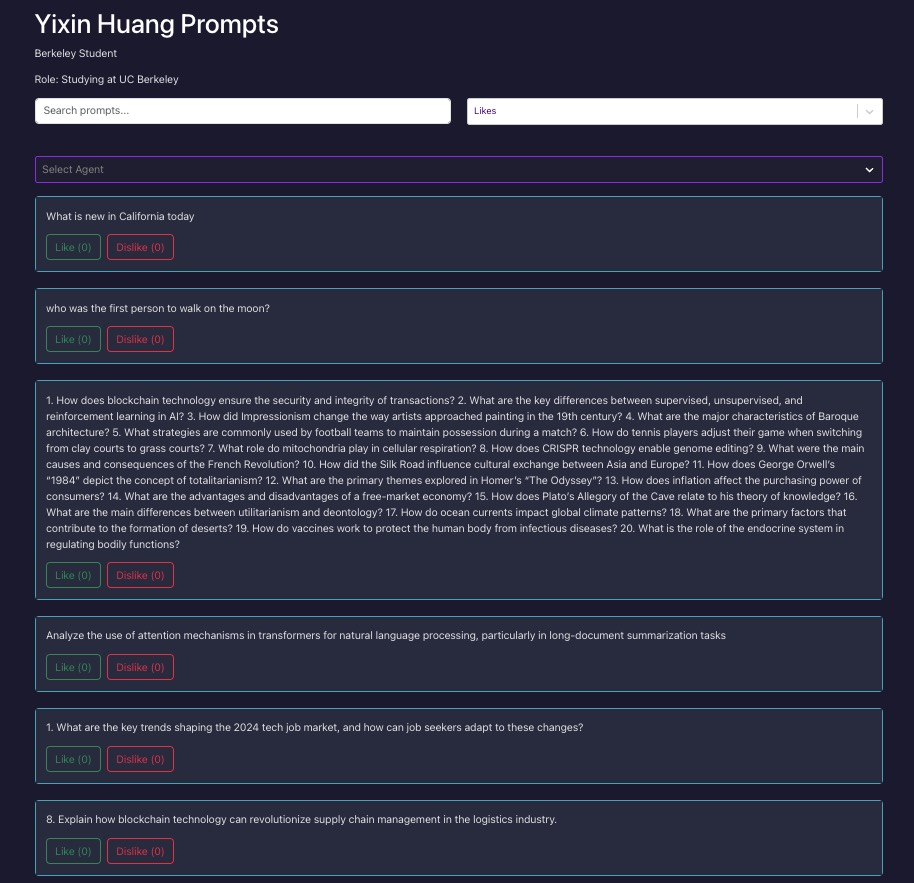
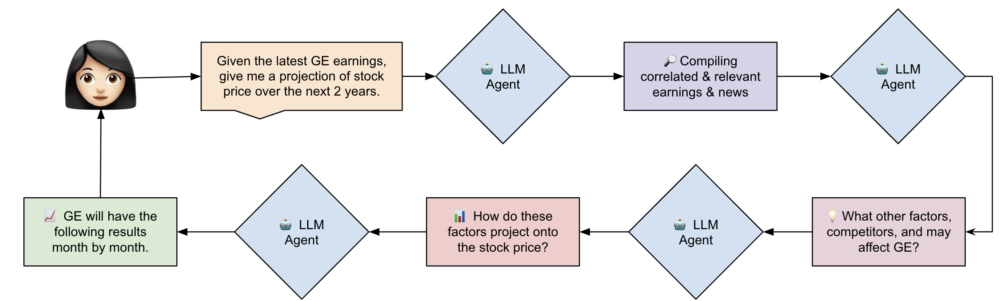

🦍 Gorilla: Large Language Model Connected with Massive APIs
Agent Arena
Agent Arena
Nithik Yekollu Arth Bohra Ashwin Chirumamilla Kai Wen Sai Kolasani Wei-Lin Chiang Anastasios Angelopoulos Joseph Gonzalez Ion Stoica Shishir Patil

Agent Arena: Evaluating and Comparing LLM Agents Across Models, Tools, and Frameworks
Introduction
With the rapid growth of Large Language Model (LLM) agents, the need for a unified and systematic way to evaluate them has become paramount. Assessing agents based on granular function calling or task-specific performance doesn't capture their overall capabilities.
LLM Agents are being used across a diverse set of use-cases, from search and code generation to complex tasks like finance and research. In practice, these agents are built using LLM models (e.g GPT-4, Claude, Llama 3.1), frameworks (LangChain, LlamaIndex, CrewAI, and plenty more), and tools (code interpreters, APIs like Brave Search or Yahoo Finance).
With so many emerging providers in all three of these categories, with often nuanced differences in capability and performance, there are endless combinations of agents that can be built, but no definitive way to evaluate them against each other.
It's important to clarify the point about the nuances in model and framework performance. We note that there are hundreds of robust evaluations of LLMs on various benchmarks (code, summarization, q&a) and similarly, numerous documentations of the differences in capabilities/tools of frameworks.
For example, let's say I wanted to build a financial assistant that retrieves the top performing stocks of the week.
❓What model should I use? One model have been trained on far more financial data 💸, while another may excel in reasoning ♟️ and computation ➗.
❓ And what about frameworks? One platform might have more API integrations but another might index the internet better.
❓ What tools should I use? Do I need tools that return stock prices 📈 or APIs that can return news 📰 about the market for this specific use-case.
As this example illustrates, there is so much to think about when designing an agentic workflow - and this is only one use-case out of potentially dozens in the financial domain alone. Different use-cases will call for different combinations of models, tools, and frameworks and currently, there is no platform that shows them compared against each other.
Therefore, we decided to release 🤖 Agent Arena, an interactive sandbox where users can compare, visualize, and rate agentic workflows personalized to their needs. Through choosing their own combinations of tasks, LLM providers, frameworks, tools, etc and also vote on their performance, we enable users to see how different agents perform against each other in a structured and systematic way. By doing this, we believe that our users can make more informed decisions regarding their agentic stack.
On top of providing benefit to our users, we also release live leaderboards and rankings of LLM providers, frameworks, and tools by domain, along with a prompt hub of over 1000+ tested tasks. We hope that this will provide a valuable resource for the community to understand the capabilities of the latest LLMs and tools. Additionally, we believe these rankings can help inform provider and framework development, helping them understand where they stand on various use-cases and how they can improve
This blog post will delve into the key elements of Agent Arena, including the definition of agents, the ranking methodology, model tuning, examples of agent use cases, and a roadmap for future developments.
The Agent Arena Platform
At its core, Agent Arena allows for goal-based agent comparisons. On a high level, users will first input a task that they want to accomplish.
Then, the user has two options: to either choose the agents that they want to compare or let an LLM automatically assign relevant agents based on the task. These agents are then tasked with completing the goal, with the agent's actions and chain of thought being streamed to the user in real-time. Once the agents have completed the task, the user can compare the outputs side-by-side and vote on which agent performed better.
The evaluation process includes voting on agent performance, with users assessing which agent met the task's requirements more effectively. This user-driven evaluation contributes to an evolving leaderboard system, which ranks agents based on their relative performance across multiple tasks and competitions. This comparison is not limited to the agents as a whole but extends to the individual components (i.e., LLM models, tools, and frameworks) that comprise each agent.
In the sections below, we will delve further into the core components of Agent Arena, including the router system, execution, evaluation and ranking mechanisms, leaderboard, and prompt hub. We will also explore some example tasks and applications that can be performed on the platform.
The Router: Agent Matching and Task Assignment
A central element of Agent Arena is its router system, which is powered by GPT-4o. The router's primary function is to match users' specified goals with the most suitable agents available on the platform. This task assignment process is based on a set of predefined algorithms that consider the specific capabilities of the agents and the requirements of the task at hand.
The router operates by analyzing the user's input (the goal or task) and selecting two agents that are optimally suited to complete that task. This selection process factors in the agents' historical performance across similar tasks, as well as their configurations in terms of models, tools, and frameworks. While the system provides an automated matching process, users have the option to manually adjust the agent selection by choosing from a list of available agents, thus providing flexibility for tailored experimentation.
For example, a user might provide the following: input("Tell me about whats going on in NVIDIA in the last week.") The router would then select two suitable options given the available agents and the leaderboard ELOs.
For this use-case, the router might select the agent
agent_a = Agent(model="GPT-4o", tools=["Yahoo Finance", "Matplotlib"], framework="Langchain")
to analyze the stock information about NVIDIA. On the other side, to compare against Agent A, the router might select the combination:
agent_b = Agent(model="Claude", tools=["Yahoo News"], framework="CrewAI")
to observe the goal from the perspective of news.
This comparison is fruitful because it allows the platform and the user to understand the nuances in the agents' capabilities and the different ways they can approach the same task. Then, they themselves can vote for which style they like better.
Evaluation and Ranking System
Agent Arena employs a comprehensive ranking system that evaluates agents based on their performance in head-to-head comparisons. The leaderboard ranks agents not only based on their overall performance but also by breaking down the performance of individual components such as LLM models, tools, and frameworks. The ranking process is informed by both user evaluations and an ELO-based rating system, commonly used in competitive ranking environments, where agent performance is dynamically adjusted after each task or comparison.
The rating system in Agent Arena is designed to reflect the cumulative performance of agents across a wide range of tasks, taking into account factors such as:
- Model performance: Evaluating the effectiveness of the underlying LLM models (e.g., GPT-4, Claude, Llama 3.1).
- Tool efficiency: Ranking the tools agents use to complete tasks (e.g., code interpreters, APIs like Brave Search or Yahoo Finance).
- Framework functionality: Assessing the broader frameworks that support agents, such as LangChain, LlamaIndex, and CrewAI.
Check out the latest rankings for each category on our leaderboard: Agent Arena Leaderboard.
⚖️ Explaining the Elo: Bradley-Terry Model and Subcomponent Modifications
The Bradley-Terry (BT) model is a well-established probabilistic method used to rank entities based on pairwise comparisons. In the context of Agent Arena, this model serves as the backbone for evaluating and ranking Large Language Model (LLM) agents. In our system, we assess not just the overall agent performance but also break it down into its core subcomponents—like models, tools, and frameworks. 🛠️
🔢 Traditional Elo System
The traditional Elo system is widely known for ranking entities, especially in competitive settings like chess. It computes ratings dynamically as agents compete. The formula is simple but powerful:
ELO_New = ELO_Old + K × (Result - Expected_Score)
Where:
- K controls the magnitude of rating changes after each battle (in Agent Arena, we use K = 4).
- Result is 1 if the agent wins, 0 if it loses, or 0.5 for a tie.
- Expected_Score is the calculated likelihood of an agent winning based on its current rating.
🧑💻 Example: LangChain Brave-Search Agent vs. LlamaIndex Wikipedia Agent
Consider the LangChain Brave-Search Agent (initial Elo: 1600) facing off against the LlamaIndex Wikipedia Agent (initial Elo: 1500). The expected score for Brave-Search, calculated based on their Elo difference, would be:
Expected_Score_Brave = 1 / (1 + 10^((1500 - 1600) / 400)) ≈ 0.64
This implies Brave-Search is expected to win 64% of the time. If Brave-Search wins, its new rating will be:
ELO_Brave_New = 1600 + 4 × (1 - 0.64) = 1601.44
If Brave-Search loses, the rating drops accordingly, and the Wikipedia agent's rating adjusts upward.
🔄 Subcomponent Battles: Tools, Models, and Frameworks
In Agent Arena, each agent is a composite of various components, including tools, models, and frameworks. Instead of just evaluating the full agents, we also assess the performance of each individual subcomponent. This allows us to more accurately pinpoint where an agent's strength lies. Here's an example:
- LangChain Brave-Search Agent: LangChain (Framework), Brave-Search (Tool), GPT-4o-2024-08-06 (Model)
- LlamaIndex Wikipedia Agent: LlamaIndex (Framework), Wikipedia (Tool), Claude-3-5-Sonnet-20240620 (Model)
📊 Traditional BT Model with Subcomponent Comparisons
Using a traditional Bradley-Terry setup, we could treat each subcomponent battle independently. For example, when comparing Brave-Search against Wikipedia, the probability that Brave-Search wins would be:
P(Brave wins) = exp(score_Brave) / (exp(score_Brave) + exp(score_Wikipedia))
🔄 Combined Subcomponent Rankings: Models + Tools + Frameworks
However, to get a holistic evaluation of an agent, we combine all its subcomponents into a single analysis. Instead of treating each subcomponent as an isolated entity, we consider their interaction within the broader agent architecture. For each battle, we build a design matrix X that represents all the subcomponents involved:
X = [ +log(BASE), +log(BASE), +log(BASE), -log(BASE), -log(BASE), -log(BASE) ]
Here, +log(BASE) represents the subcomponents (tool, model, framework) used by the winning agent, while -log(BASE) represents those used by the losing agent.
🛠️ Example: LangChain Brave-Search Agent vs. LlamaIndex Wikipedia Agent
If Brave-Search wins the battle, the design matrix would look like this:
Components: [LangChain, Brave-Search, GPT-4o] vs. [LlamaIndex, Wikipedia, Claude]
X = [ +log(BASE), +log(BASE), +log(BASE), -log(BASE), -log(BASE), -log(BASE) ]
This allows us to evaluate the collective contribution of the subcomponents (tools, models, frameworks) in a single calculation. We then apply logistic regression with regularization to control for overfitting and confounding effects caused by frequent pairings.
📉 Regularization: Handling Data Imbalance
Given the diversity of agent configurations, certain agents may not battle frequently with others that have different components. This can lead to data sparsity. To counteract this, we use L1 regularization (Lasso), which helps select the most important subcomponents while avoiding overfitting. The regularization formula is:
Minimize: - [∑ Y_i log(P_i) + (1 - Y_i) log(1 - P_i)] + λ ∑|β_j|
Where:
- Y_i is the battle outcome (1 for win, 0 for loss).
- P_i is the predicted probability of winning.
- λ is the regularization parameter that controls sparsity.
🔎 Traditional Loss vs. Subcomponent Combined Loss
In a traditional BT model, the loss function calculates the difference between the predicted and actual outcomes for each battle, represented as:
BCELoss(Sigmoid(X × β), Y)
However, for the new approach, the loss function takes into account the combined influence of models, tools, and frameworks in a battle:
BCELoss/Sigmoid(X^LLM B_LLM + X^Tool B_Tool + X^Framework B_Framework, Y)
This approach reflects how each subcomponent contributes to the overall result, providing more accurate rankings.
✅ Conclusion: Fairer Rankings Across All Components
By using this combined approach, Agent Arena ensures more accurate rankings across agents and their subcomponents. 🔄 This method provides clearer insights into each agent's performance and contributions, preventing the bias that can occur from frequent pairings or overused configurations.
🎉 As a result, our system generates a real-time, continuously updating leaderboard that not only reflects the agents' overall performance but also their specific subcomponent strengths. 🏆
Check out our live leaderboards for agents, tools, models, and frameworks here!
The Prompt Hub
The Agent Arena also comes with a prompt hub that has over 1000+ tasks that have been tested and verified to work on the platform. Users will be able to search for similar use cases as theirs and observe how different prompts are executed and perform. Furthermore, the platform also enables users to post their prompts to the community.
🏠 Prompt Hub Overview
The prompt hub is a way for users to interact with other users and see a unique view of the individual and domain specific use cases that users demand with agents. This is a great way to see user activity at a granular level and see what specifically users are using agents to do and how to prioritize future agent development.
🧑💻 Invidual User View
Additionaly, users can provide feedback to other users on their invidual prompts through the prompt hub by liking and disliking individual prompts. This provides an additional data point for future for prompt analytics to potentially evaluate domain-specific performance of various agents in the arena.
The Abilities of Agents
Through the process of building out the agent arena and literature analysis, we were
able to observe the several different "skills" that comprise of an agent's performance.
More specifically, different use-cases required different levels of these "skills" in
order to get the final answer correct. Here are some of the key skills that we observed.

As these "skills" have become more important in the development of agents, we have seen a rise in the development of models that are specifically optimized for agent-like tasks. For example:
- Mixtral: Utilizing a Mixture-of-Experts architecture, Mixtral activates only relevant subnetworks, allowing for more context-aware responses in tasks that require specialization.
- Llama 3.1: Fine-tuned for tool use, Llama 3.1 interacts with external tools, such as market data fetchers and graph plotters, making it highly suitable for agent tasks requiring data manipulation.
- OpenAI o1 models: These models excel at chain-of-thought reasoning, task planning, and multi-step problem solving, essential for agents handling complex tasks. Their ability to generate and execute code further enhances their versatility in agent-like tasks.
While these models are a step forward, additional research and fine-tuning are required to build models that fully emulate the reasoning, planning, and adaptive behaviors critical for sophisticated agents.
💼 Case Studies
Your choice of model, framework, and tools will often differ greatly depending on domain applications and use cases. Domain-specific agent developer will need to find the optimal combination of these factors to maximize performance. The vision of the future is that eventually, agents will become accurate enough to the point where we will allow them to make informed and perhaps critical decisions without the need for a human in the loop. While there's ways to go, here are a few industries that could get shaken up by agents:
Research & Knowledge Retrieval 🔎
Before delving into any research project, establishing a solid foundation through the retrieval and analysis of relevant literature is crucial. However, sifting through extensive publications to find pertinent information can be exceedingly time-consuming. This process involves identifying key sections of existing works, discerning the novel contributions and nuances of your own initiatives, and ensuring a comprehensive review to avoid overlooking significant resources. Agents like those supported in the arena—such as arXiv, PubMed, and specialized search tools—can dramatically expedite this process. By efficiently fetching relevant research information from these platforms, they assist in conducting a comprehensive and efficient literature review, thereby accelerating the research initiation phase. Optimizing these knowledge retrieval and research agents in regards to all the models, frameworks, and tools available is a key step in the development of agents.
Finance & Wealth Management 💰
Currently, in the United States, trillions of dollars are invested in index funds, exchange-traded funds (ETFs), and other passive investment vehicles. While these assets offer a convenient and efficient way for investors to diversify their portfolios with minimal effort through firms or brokerages, they may not fully align with the unique priorities, risk tolerances, and asset preferences of individual investors. Consequently, a finance and wealth management agent that actively researches, analyzes, and recommends assets could provide personalized advice beyond the general strategies employed by large firms. This represents a tangible application where individual users could significantly benefit from utilizing such agents in their investment decisions.
Next Steps and Project Roadmap
We have an exciting roadmap ahead for Agent Arena, with several initiatives planned to both enhance and expand the platform's capabilities. We envision that the agent arena will become a central hub for both agent developers and providers.
For developers and users interested in building/using agents, the platform will be a sandbox for them to perfect their agentic stack, with the right providers and frameworks tailored to their use-cases
By providing a systematic way to run agents, compare them against each other, view advanced analytics for providers based on their use-case, and even view the prompts of similar users, we hope to deliver value to the agent-building community.
To reach this vision, we have laid out a comprehensive roadmap of feature development and improvement. The general theme of these changes will be to improve the personalization of the arena to individual users along with expanding the available analytics.
📈 Increasing the Number of LLM & Framework Providers on the Platform
One of the primary goals of the Agent Arena is to show users all of the combinations of agents that they can build, so they can definitely know which options are the best suited for their use-cases. While we currently offer the main providers in each category, we hope to expand our selection to include more niche providers that are specialized in certain tasks.
🧑💻 Incorporating User Personalization
In order to make the platform as useful as possible, we want to ensure that users are met with specific recommendations on the latest releases and agents that are best suited for their use-cases. This will involve us learning their preferences in their providers and output formats, enabling us to then recommend the best agents for them.
🪜 Enabling multi-turn prompts
Most agentic tasks involve multiple steps of reasoning and action from the agent. This requires keeping track of the state of the context of the task. For example, take the following task:
Task: "Search for the top 5 performing stocks this year in the S&P 500 and then find the latest news about them."
This task requires the agent to first find the top 5 stocks, keep it somewhere in backend 'memory',and then call another set of individual tools to find the latest news about them. This is a multi-turn prompt, and other examples can start to involve 5+ steps. We plan on releasing this feature in the upcoming few months for users.
🏋️♀️ Expanding the Capabilities of the Platform
The current implementation of the platform has left several domains of agent use-cases unexplored. More specifically, we hope to start integrating with APIs like Jira, Github, GSuite and other tools to enable users to actually run agents on their personal data. While this will involve a lot of security and privacy considerations, we believe this is a critical step in making the platform more useful to users.
📊 Improving the Recommendation Algorithm
Based on user preferences and the providers/frameworks they like, we plan on improving the routing of goals to more relevant agents for the user. Additionally, we will include two different modes of routing: one that is more exploratory and one that is more focused on the user's preferences.
🧠 Reasoning Based Models
With the recent release of reasoning based models like OpenAI's o1 models, a short-term goal of ours is to integrate these models into the platform. With this, we will benchmrk their performance against the top models in the leaderboards and explore their importance to different use-cases.
Conclusion
Agent Arena is designed to address the growing need for a platform to evaluate and compare LLM agents. By offering a comprehensive ranking system and tools to test agents from various frameworks, the platform allows users to make informed decisions about the best models and tools for their specific needs. With continuous improvements and expansions planned, Agent Arena is set to play a pivotal role in shaping the future of LLM agent evaluation.
As the field of AI continues to evolve rapidly, platforms like Agent Arena will become increasingly crucial in understanding and leveraging the capabilities of LLM agents. By providing a standardized environment for testing and comparison, Agent Arena not only aids in the selection of appropriate agents for specific tasks but also contributes to the overall advancement of AI technology.
We invite researchers, developers, and AI enthusiasts to explore Agent Arena, contribute to its growth, and help shape the future of agent-based AI systems. Together, we can push the boundaries of what's possible with LLM agents and unlock new potentials in AI-driven problem-solving.
We hope you enjoyed this blog post. We would love to hear from you on Discord, Twitter
(#GorillaLLM), and GitHub.
Citation
If you would like to cite Agent Arena:
@inproceedings{agent-arena,
title={Agent Arena},
author={Nithik Yekollu and Arth Bohra and Ashwin Chirumamilla and
Wei-Lin Chiang and Anastasios Angelopoulos and Joseph E. Gonzalez and
Ion Stoica and Shishir G. Patil},
year={2024},
howpublished={\url{https://gorilla.cs.berkeley.edu/blogs/13_agent_arena.html}},
}